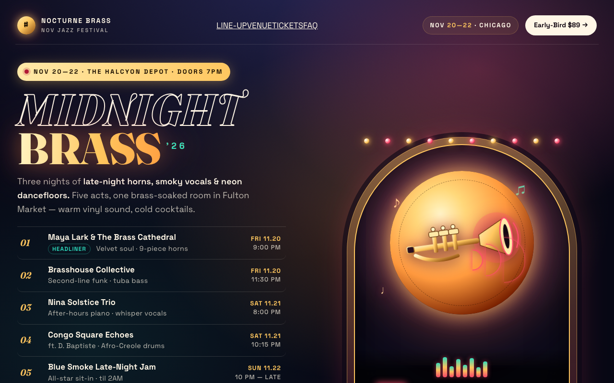
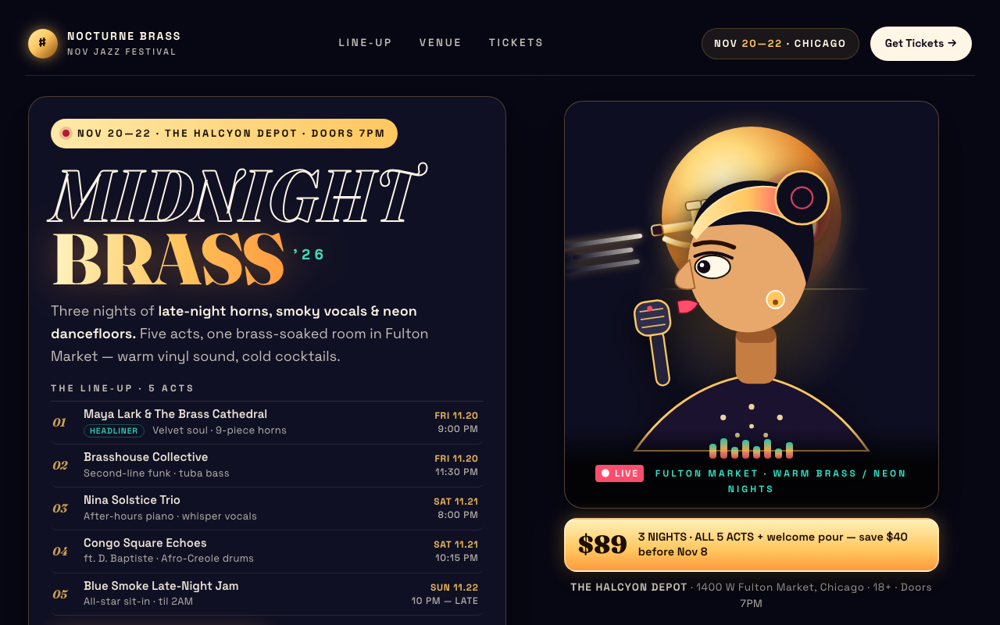

| issue | opened | resolved | attempts | tried |
|---|---|---|---|---|
| Place areas (PPA/RSC) dominate: the background scene swallows the message | r0 | r2 | 2 | r1: dimmed background to near-solid ink, put copy on solid panel, cropped arch glow and grain / r2: removed beams, lights, grain and arch glow; art cropped to solid portrait card on flat ink |
| Object-shape (LO) and motion (MT) areas are low: a text-first screen with no clear object silhouette | r0 | open | 5 | r4: Replaced small moon-bound trumpet with one dominant diagonal mega-trumpet (135% width, -16 / r5: Flipped trumpet to bell-left mega-silhouette at 165% width bleeding off arch on -16deg dia |
| Face areas (FFA/STS) are silent: no human or gaze cue | r0 | open | 5 | r4: Replaced small profile bust with large front 3/4 vocalist face (380px, both eyes visible, / r5: Replaced single-eye profile with front 3/4 vocalist, both pupils locked left toward CTA pl |
| Reward circuit (OFC/vmPFC) is on but the appeal head is average: value is felt but what is good isn't legible | r0 | open | 5 | r4: Made $89 hero-value the single price anchor; removed $89 and Save $40 duplication from mai / r5: Single benefit line + price in hero-value under eye-landing, removed $89/save duplication |
| r | ui | brain | judge | kept | changes | sourced photos |
|---|---|---|---|---|---|---|
| r0 | 0.574 | 0.416 | 0.72 | ✓ | ||
| r1 | 0.631 | 0.525 | 0.75 | ✓ | dimmed background to near-solid ink, put copy on solid panel, cropped arch glow ; added diagonal neon motion beam + tilted trumpet silhouette as dominant object; added illustrated vocalist profile in front of moon with gaze and trumpet aimed | |
| r2 | 0.662 | 0.617 | 0.75 | ✓ | removed beams, lights, grain and arch glow; art cropped to solid portrait card o; replaced diagonal beams with one dominant horizontal trumpet + 3 leftward motion; enlarged vocalist to 340px with large left-gazing eye and eyeline vector to tick | |
| r3 | 0.552 | 0.419 | 0.67 | · | Replaced small moon-bound trumpet with one dominant diagonal trumpet silhouette ; Replaced small profile bust with large front 3/4 vocalist face (400px) whose bot; Made hero-value the single price anchor ($89 + 3 nights/all 5 acts/welcome pour/ | |
| r4 | 0.610 | 0.465 | 0.75 | · | Replaced small moon-bound trumpet with one dominant diagonal mega-trumpet (135% ; Replaced small profile bust with large front 3/4 vocalist face (380px, both eyes; Made $89 hero-value the single price anchor; removed $89 and Save $40 duplicatio | |
| r5 | 0.607 | 0.447 | 0.75 | · | Flipped trumpet to bell-left mega-silhouette at 165% width bleeding off arch on ; Replaced single-eye profile with front 3/4 vocalist, both pupils locked left tow; Single benefit line + price in hero-value under eye-landing, removed $89/save du |